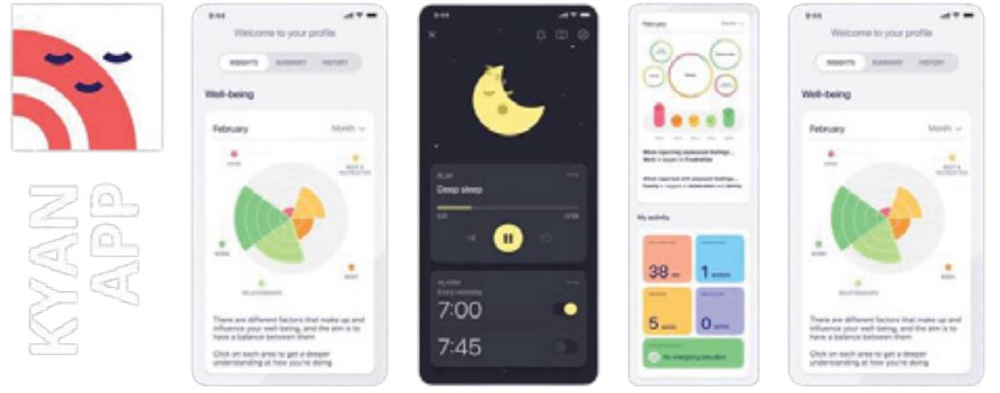
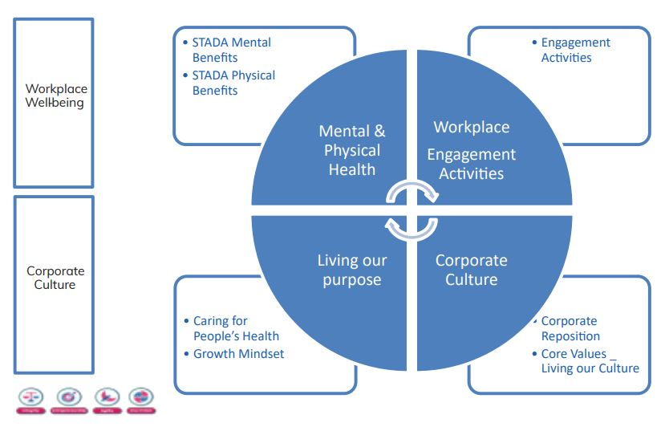
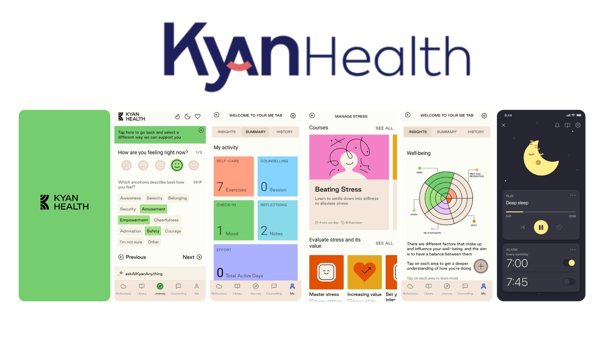
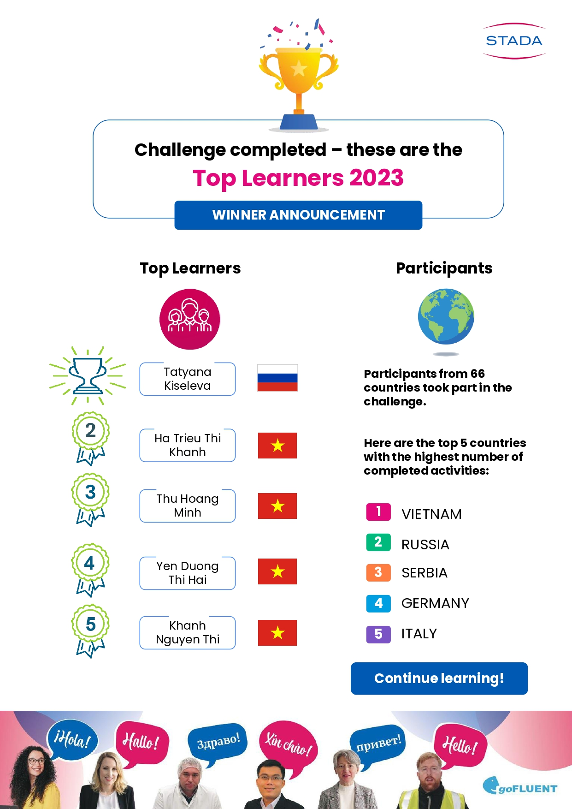
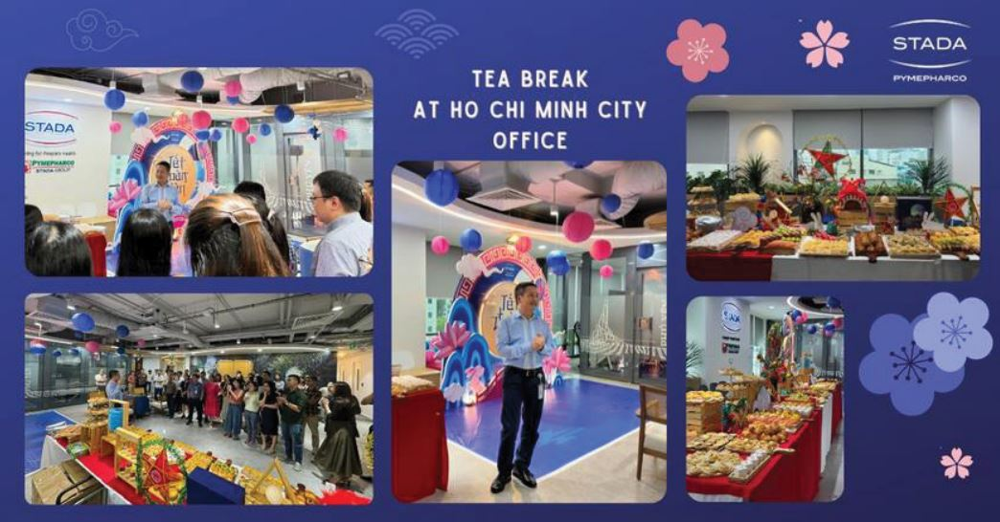
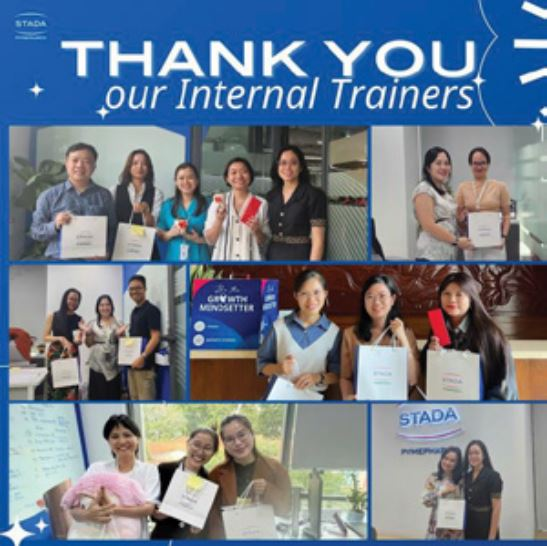
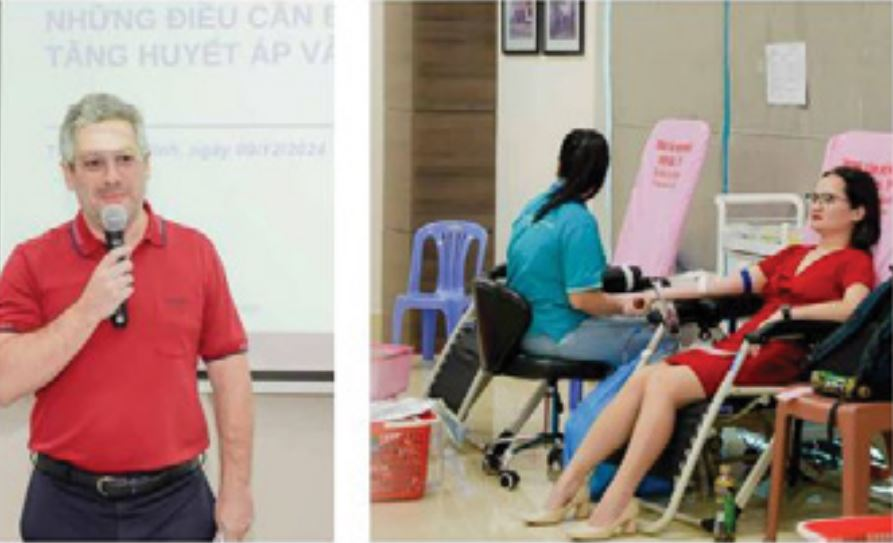
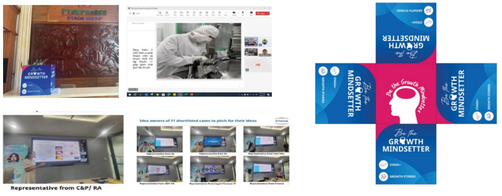
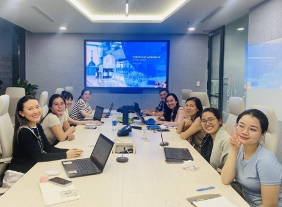
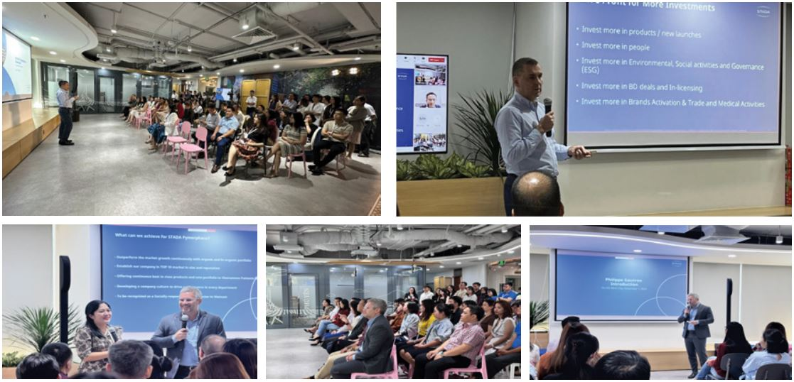

STADA Pymepharco has grown for the seamless 35 years and proudly supports over 1,200employees across Vietnam. With two EU-GMP certified factories, the company remains deeply committed to its purpose: Caring for People’s Health as a Trusted Partner – a promise that starts from within.

Triết lý kinh doanh của STADA Pymepharco được xây dựng trên niềm tin vững chắc rằng phát triển bền vững bắt đầu từ con người. Dưới sự dẫn dắt của bốn giá trị cốt lõi: Chính trực, Tinh thần khởi nghiệp, Linh hoạt và Tinh thần “Một STADA”, công ty đặt sức khỏe thể chất, tinh thần và văn hóa làm việc của nhân viên vào trung tâm chiến lược dài hạn. Bởi sau cùng, chính sự hài lòng và phát triển toàn diện của mỗi cá nhân là nền tảng vững chắc cho sự tăng trưởng bền vững. STADA Pymepharco không ngừng nỗ lực xây dựng môi trường làm việc nơi sức khỏe, khả năng học hỏi liên tục, sự thích ứng cảm xúc và an toàn tâm lý được vun đắp, để mỗi người có thể phát triển và gắn bó lâu dài cùng tổ chức.

Khung chương trình Phúc lợi Toàn diện tại STADA Pymepharco được xây dựng dựa trên ba trụ cột: Sức khỏe tinh thần, Sức khỏe thể chất và Gắn kết nơi làm việc.
Sức khỏe tinh thần: Nhận thức rõ vai trò ngày càng quan trọng của sức khỏe tâm lý trong môi trường công sở hiện đại, đồng thời đồng hành cùng chiến lược toàn cầu của Tập đoàn, STADA Pymepharco đã chủ động triển khai nhiều sáng kiến chăm sóc sức khỏe tinh thần cho nhân viên. Tiêu biểu là chuỗi chương trình Doctor Talk Series, tập trung vào việc nhận diện các bệnh lý liên quan đến áp lực công việc, giải mã các triệu chứng thường gặp, góp phần giảm kỳ thị sức khỏe tâm thần và mang đến góc nhìn y khoa thực tiễn cùng những lời khuyên phòng ngừa hiệu quả. Bên cạnh đó, thông qua nền tảng số cá nhân hóa Kyan Health, nhân viên được đồng hành cùng trợ lý ảo để hỗ trợ xây dựng thói quen sống tích cực và lành mạnh mỗi ngày. Việt Nam tự hào nằm trong top 3 quốc gia có mức độ tương tác cao nhất trên toàn cầu, với sự tham gia sôi nổi của đội ngũ vào các hoạt động như thể dục hàng ngày, thiền có hướng dẫn và các buổi tham vấn cùng chuyên gia tâm lý.

Nhằm nâng cao hiệu quả cho các sáng kiến đã triển khai, công ty giới thiệu STADA GPT - trợ lý ảo ứng dụng trí tuệ nhân tạo, hỗ trợ nhân viên tiếp cận các hướng dẫn chăm sóc sức khỏe tinh thần một cách bảo mật, linh hoạt và tức thời, mọi lúc mọi nơi. Sáng kiến này không chỉ thể hiện bước tiến trong việc tích hợp công nghệ vào chiến lược nhân sự, mà còn phản ánh cam kết bền vững của STADA trong việc giữ vững giá trị chính trực, đồng hành cùng mục tiêu xuyên suốt: Chăm sóc sức khỏe cộng đồng với vai trò là đối tác đáng tin cậy.

Nhằm nâng cao hiệu quả cho các sáng kiến đã triển khai, công ty giới thiệu STADA GPT - trợ lý ảo ứng dụng trí tuệ nhân tạo, hỗ trợ nhân viên tiếp cận các hướng dẫn chăm sóc sức khỏe tinh thần một cách bảo mật, linh hoạt và tức thời, mọi lúc mọi nơi. Sáng kiến này không chỉ thể hiện bước tiến trong việc tích hợp công nghệ vào chiến lược nhân sự, mà còn phản ánh cam kết bền vững của STADA trong việc giữ vững giá trị chính trực, đồng hành cùng mục tiêu xuyên suốt: Chăm sóc sức khỏe cộng đồng với vai trò là đối tác đáng tin cậy.
Sức khỏe thể chất: STADA Pymepharco đã có những bước tiến thiết thực nhằm nâng cao thể trạng và sự thoải mái cho đội ngũ nhân viên cho thấy cam kết vững vàng với sứ mệnh Chăm sóc sức khỏe cộng đồng. Một trong những thành tựu nổi bật là việc mở rộng phạm vi bảo hiểm y tế đồng thời giảm 19% mức phí bảo hiểm so với cùng kỳ năm trước, với quyền lợi được mở rộng cho cả người thân phụ thuộc của nhân viên. Không chỉ dừng lại ở chăm sóc y tế, STADA Pymepharco còn chú trọng xây dựng môi trường làm việc hỗ trợ toàn diện qua đầu tư các không gian như Phòng dành cho Mẹ và Phòng thư giãn, giúp nhân viên phục hồi thể chất sau thai kỳ, tái tạo năng lượng và duy trì sự cân bằng trong suốt ngày làm việc. Bên cạnh đó, hàng loạt hoạt động tại văn phòng được tổ chức thường xuyên, nhằm đảm bảo mỗi nhân viên luôn cảm nhận được sự quan tâm, trân trọng và tiếp thêm năng lượng.

STADA Pymepharco cũng trân trọng những dịp lễ kỷ niệm truyền thống như Tết Nguyên Đán, Tết Trung Thu hay Ngày Nhà Giáo Việt Nam như một lời tri ân dành cho nhân viên và cũng là thời gian để các thế hệ, các phòng ban cùng chia sẻ và kết nối. Những hoạt động này không chỉ góp phần vun đắp văn hóa nội bộ mà còn gắn kết mọi người trong tinh thần "One STADA". Thông qua nền tảng STADA+, nhân viên được ghi nhận không chỉ bởi kết quả công việc, mà còn nhờ những sáng kiến, đóng góp đổi mới phù hợp với giá trị cốt lõi của công ty. Ở quy mô toàn cầu, STADA’s Caring Day là minh chứng cho cam kết bền vững của Tập đoàn trong việc nâng cao sức khỏe cộng đồng và phúc lợi xã hội.



Mid-Autumm Festival

Vietnamese Teacher’s day

“Giving blood – Saving lives”
Không chỉ là lý thuyết mà văn hóa doanh nghiệp hiện diện trong từng lời nói, hành động, cách sẻ chia và hỗ trợ lẫn nhau mỗi ngày. Tinh thần ấy được lan rộng khắp và trong tất cả đơn vị thành viên của STADA, trong đó bao gồm STADA Pymepharco.
Chính trực: Làm điều đúng, kể cả khi không ai chứng kiến. Tại STADA, sự tin tưởng và minh bạch không chỉ được khuyến khích, mà còn trở thành tiêu chuẩn. Từ việc bảo mật thông tin, giải quyết những lỗi sai một cách thẳng thắn, công ty cũng xây dựng một môi trường mà hành xử chính trực trở thành một phần không thể tách rời trong công việc hàng ngày. Đây cũng là nền tảng cho phát triển bền vững và trách nhiệm doanh nghiệp.
Tinh thần khởi nghiệp: Nghĩ lớn và mọi nhân viên đều làm chủ. Mỗi nhân viên tại STADA đều được trao quyền để chủ động hành động, sáng tạo và dẫn dắt. Văn hóa Growth Mindset được nuôi dưỡng thông qua chia sẻ nội bộ và các chiến dịch truyền cảm hứng, khuyến khích nhân viên vượt khỏi giới hạn vai trò để suy nghĩ như những nhà lãnh đạo doanh nghiệp. Từ các buổi chia sẻ chiến lược cấp cao đến những câu chuyện đổi mới được vinh danh qua STADA+, tinh thần khởi nghiệp không chỉ được kỳ vọng mà còn được truyền cảm hứng và lan tỏa ở mọi cấp bậc.

Linh hoạt: Phát triển qua thay đổi và thử thách. Tại STADA, sự linh hoạt không chỉ là một kỹ năng, mà là một tư duy cốt lõi. Công ty khuyến khích mỗi cá nhân cởi mở với cái mới, đón nhận thay đổi và xem mọi thử thách là cơ hội học hỏi. Nhân viên được phát triển để tư duy nhanh, hành động dứt khoát và luôn hướng đến giải pháp trong một môi trường đầy biến động. Thông qua các buổi đào tạo chuyên đề và chương trình phát triển tư duy, đội ngũ STADA được trang bị khả năng thích ứng linh hoạt, tự tin chuyển mình trước những thay đổi và chủ động kiến tạo kết quả tích cực.
Một STADA: Sức mạnh từ tập thể. Được xây dựng trên nền tảng giao tiếp minh bạch, tinh thần đồng đội, STADA luôn đồng hành vượt qua mọi khó khăn và biến động bằng sự gắn kết và mục tiêu chung. Bản sắc văn hóa thống thể hiện rõ qua các sự kiện liên phòng ban, hoạt động hợp tác đa chức năng và những khoảnh khắc sẻ chia ý nghĩa. Từ các buổi Townhall, chương trình học tập đồng cấp đến những cột mốc kỷ niệm đáng nhớ, tất cả góp phần nuôi dưỡng một văn hóa gắn kết, hướng giá trị và kết nối mỗi cá nhân vào một sứ mệnh chung của doanh nghiệp.


STADA Pymepharco tự hào đạt tỷ lệ tham gia khảo sát Pulse Survey lên đến 99%, với điểm số gắn kết nhân viên ấn tượng 8,5/10 – một trong những con số cao nhất trong toàn Tập đoàn STADA trên thế giới. Chương trình STADA+ trở thành nền tảng thường nhật để tôn vinh và lan tỏa tinh thần Khởi nghiệp trong toàn công ty. Những kết quả này khẳng định rằng khi sự quan tâm được đặt làm nền tảng văn hóa cốt lõi, sức khỏe tinh thần cùng môi trường làm việc sẽ phát triển một cách bền vững. Và chính văn hóa ấy đã, đang và sẽ là nguồn sức mạnh thúc đẩy thành công lâu dài của STADA Pymepharco.

Tel: (028) 62682222 - EXT.122
(+84) 908 267 759
Email: clientsolution@anphabe.com
Follow us